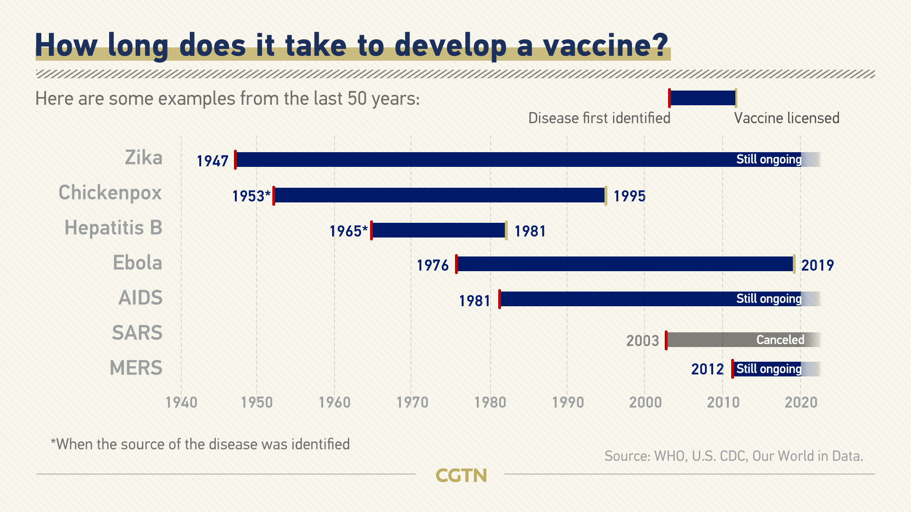

TREATMENT
There is currently no vaccine present for the treatmeant of CoronaVirus disease. But, you can protect
yourself by following the below given measures.
Self Care
If you have mild symptoms, stay at home until you’ve recovered. Follw the below given measures.
- Rest and Sleep
- Keep Warm
- Drink plenty of liquids
- Use a room humidifier or take a hot shower to help ease a sore throat and cough
If you develop a fever, cough, and have difficulty breathing, promptly seek medical care.
Call in advance and tell your health provider of any recent travel or recent contact with travelers.
Making a vaccine is a long process which can extend from a few years to many decades. Here are some
examples of development of vaccine in last 50 years.
